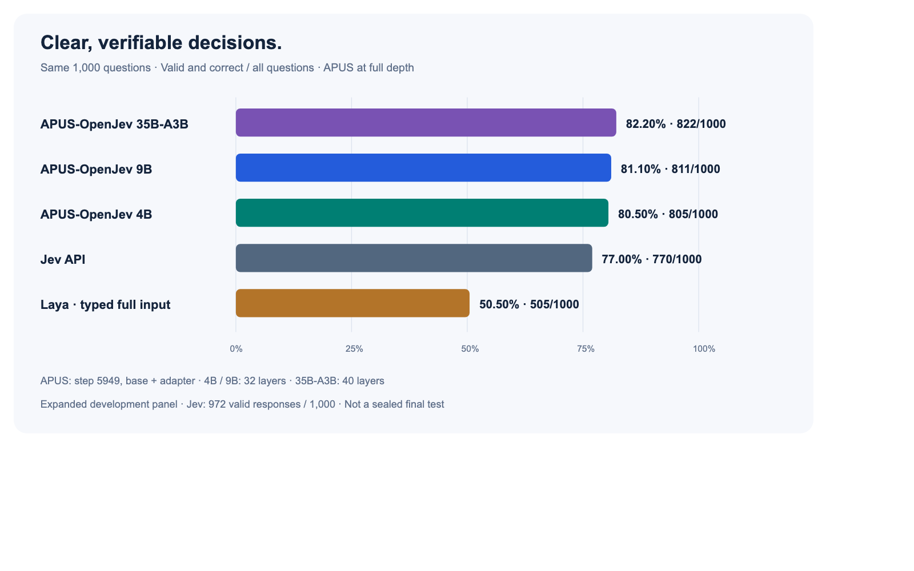

Experience & direction
-
Cloud systems engineering
Tencent Cloud · OS team
Worked on cloud operating systems and infrastructure. The systems layer came before the model layer.
-
LLM training & post-training
xDAN AI · Founder & model training engineer
Led our team's work on the xDAN model family: training, alignment, and the engineering around model releases.
-
Building Agent Native
xDAN AI · Founder
Building products and systems around agents: tools, execution, feedback, and real-world tasks. Turning model capabilities into useful work.
2026 / JEV REPRODUCTION SERIES
APUS-OpenJev-v1
Co-author · APUS AI-LAB · 4B / 9B / 35B-A3B
An open-source model series reproducing the Jev decision-model approach, with extensions for dynamic-depth computation. All three models outperform the recorded Jev API baseline on our shared 1,000-question development panel: 4B 80.5%, 9B 81.1%, and 35B-A3B 82.2%, versus 77.0%. Built for browser agents and business workflows.
- 35B-A3B · 1,000-question panel
- 82.2%
- Above the recorded Jev API result
- +5.2 pp
- 9B · local HTTP median latency
- ~26 ms
Dynamic-depth computation. Jointly trained early and full-depth paths let applications select a smaller or larger compute budget through
effort="low"or"high". Candidate scoring keeps decisions within the supplied action space.
Valid and correct decisions out of all 1,000 questions. Full-depth base + adapter; an expanded development panel, not a sealed final test. View full-size chart Latency comes from a separate 9B serving run on one RTX PRO 6000: ~26 ms median local HTTP response time. It is not a matched-hardware speed comparison with the Jev API.
Other current work includes OpenFinClaw, a financial agent project.
xDAN-DSH-uni-agentWork on a uni-agent fork -
Self-improving models
Research direction · metaRSI
I want to close the loop: agents that don't just execute, but turn experience into better models.
How can agent experience become measurable gains in model capability?
An exploration direction. The next thing to build.